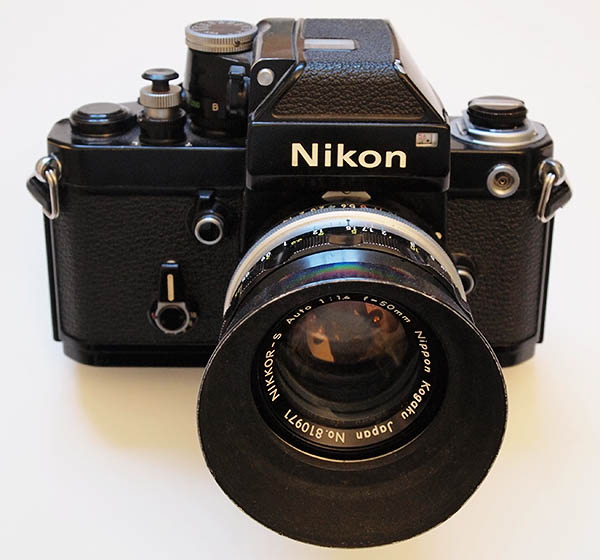

|
Camera (very) FundamentalsVersion 3.1, page 1, © 2002, 2006, 2009 by Dale Cotton, all rights reserved "I just bought an SLR camera after using a point-and-shoot all my life. What are all these f/stops and shutter speeds and other technical gibberish? The manual that came with the camera seems to assume I already understand this stuff. Yet I can't find anything on-line that explains it clearly. Help!" Photography forums get messages like this most every day. In the following tutorial, I'll try to assume nothing, keep my explanations as simple as possible without glossing over any essentials, while skipping any unnecessary technicalities. Or perhaps you'd like to buy an SLR but feel intimidated at the very thought? It's all much simpler than you thought. "I use my camera set on automatic all the time. It seems like half my pictures have problems, so I guess I have to figure out all the technical stuff if I want to take better pictures. Help!" Most modern cameras have a P (Program) setting to make all the decisions for you. Most serious photographers avoid P as though it stands for Plague. How can the camera know whether you need everything in focus or only the main subject in focus for a given scene? How can it know whether to give you the fastest possible shutter speed or the slowest or something in between for a given situation? How can it know which portion of the scene to expose for? I fully expect that the vast majority of people reading this tutorial will own and use a digital camera. Digital cameras are very sophisticated; so much so that it often becomes difficult to visualize some of the underlying principles, which is what we're trying to accomplish here. So I'd like you to meet a much simpler, more in-your-face camera, which we'll use just to explore the basics. Fear not: we'll transfer those basics to digital as we go along. Your turn: This tutorial is a public-service; I don't make money from it. If you find any part of it difficult to understand (or even factually incorrect), please let me know, so I can try to make it clearer. Meet the Nikon F2This is a Nikon F2 35mm film camera: 
It was manufactured in 1972 and doubtless first purchased by a pro photographer or very serious amateur because it was very expensive back then. Let's take a closer look at all those forbidding-looking dials and controls:
Fig. 2: The F2's simple control set For Fig. 2 I removed the F2's viewfinder and set it down to the right to expose the top of the shutter speed dial, labelled D (normally hidden from above under the ASA dial, labelled A). There are five crucial controls on a camera, whether an old-timer like the F2 or the most modern of digitals:
Knowing your way around these controls puts you in charge of the camera, not the other way 'round. (And if you're a math-o-phobe like me – don't worry about all those numbers, they're actually no scarier than the speedometer on your car.) Your turn: (Some of these exercises may come across as sophmoric but I can't know your background, so bear with me.) Using the manual if necessary, identify the controls on your own camera for all five of the above functions. Note that some lower-priced and/or user-friendly compact cameras don't have all five controls. If your camera is one of these, it's still invaluable to understand how the camera works underneath the hood, but you won't be able to follow along with the optional exercises like this one. |
| - 1 - |


{kind=link}